CHAPTER 2
The Approach, Techniques, and Devices for Examination of the External Eye and Cornea
This chapter includes a related video. Go to www.aao.org/bcscvideo_section08 or scan the QR code in the text to access this content.
Indicates selected key points within the chapter.
Highlights
External Eye Exam
General Appearance
The external eye examination begins with observing the patient upon entering the exam room. The patient’s general appearance, body habitus, physical difficulties, personal hygiene, and ease of interaction provide the clinician with valuable information that aids in establishing rapport, determining examination challenges, developing a differential diagnosis, and preparing a treatment plan. The condition of the patient’s skin, including the presence and distribution of rashes or lesions, signs of acne rosacea, and the degree of pigmentation can provide clues to diagnosis. External eye conditions, such as proptosis, enophthalmos, malposition, asymmetry, diminished retropulsion, and orbital rim step-off, can also guide the clinician toward diagnosis and a plan for treatment.
The Eyelids
Assessment of the eyelid surface is recommended to identify signs of inflammation, eyelid lesions, or the absence of lashes as well as conditions associated with eyelid position, including eyelid retraction, lagophthalmos, scleral show, ptosis, entropion, and ectropion. Evaluation of the frequency and completeness of blinking may yield crucial information about eyelid function. The eyelid can be everted so that presenting concerns of foreign body sensation or hemorrhage or unusual results of corneal staining can be further investigated.
Corneal Sensation
Corneal sensation is supplied by the ophthalmic branch of the nasociliary branch (V1) of the fifth (trigeminal) cranial nerve. Corneal sensation and the blink response can be assessed by means of a wisp of cotton from a cotton-tipped applicator in the absence of topical anesthesia and before measuring intraocular pressure (IOP). Approaching the patient from the side helps avoid a reflexive flinch from the patient. Corneal sensation findings may be classified as normal, reduced, or absent. The cotton swab can disturb the corneal surface; therefore, it is important to evaluate the cornea prior to checking sensation.
Handheld esthesiometer
Quantitative methods for measuring corneal sensation typically are reserved for research or complex cases. The most common quantitative device is the handheld (Cochet-Bonnet) esthesiometer. The Cochet-Bonnet esthesiometer contains a thin, retractable nylon monofilament. The pressure applied by the device is a function of the length of this monofilament. As the length decreases from 60 mm to 5 mm, the pressure increases from 11 mm/gm to a maximum of 200 mm/gm.
Greiner MA, Faulkner WJ, Vislisel JM, Varley GA, Goins KM. Corneal diagnostic techniques. In: Mannis MJ, Holland EJ, eds. Cornea. Vol. 1. 4th ed. Elsevier; 2017:116–122.
Slit-Lamp Biomicroscopy
The slit lamp is a fundamental ophthalmic tool. It is capable of producing various types of illumination at different angles, which are used to highlight various lesions and opacities, and it is indispensable for examining the anterior segment. Mastering the slit-lamp examination is crucial for accurate identification of corneal pathology and thus for making the proper diagnosis and therapeutic plan. See the sidebar for tips on using the slit lamp effectively. Figure 2-1 depicts an algorithm for differential diagnosis based on slit-lamp findings.
The slit-lamp biomicroscope has 2 rotating arms—1 for the slit illuminator and 1 for the biomicroscope—mounted on a common axis. The illumination unit is essentially a light projector with a beam that is adjustable in width, height, direction, intensity, and color. On examination, reflections of light are visible from the anterior and posterior surfaces of the cornea and lens; these are known as Purkinje images or reflexes. The magnification power of the biomicroscope is adjustable, and the illumination and microscope arms are parfocal, arranged so that both focus onto the same spot, with the slit beam centered on the field of view. This setup accommodates various forms of illumination.
Illumination Techniques
At the slit lamp, the target can be illuminated directly or indirectly.
Direct illumination
Direct illumination techniques include diffuse, focal, and specular illumination.
Diffuse illumination In diffuse illumination, the light beam is broadened, reduced in intensity, and directed obliquely at the eye. By swinging the illuminator arm to produce highlights and shadows, the visibility of irregularities of the ocular surface (eg, epithelial basement membrane dystrophy) and iris lesions can be improved (Fig 2-2).
Focal illumination In focal illumination, the light beam and the microscope are directed to the same spot, and the slit aperture is narrowed. Focal illumination is achieved with a broad beam or a slit beam:
Specular reflection Another direct illumination technique is based on specular reflection, which are normal light reflexes bouncing off a surface (see Fig 2-2D). A faint reflection also comes from the posterior corneal surface. Specular reflection improves visualization of the corneal endothelium. At a magnification power of 25× to 40×, cell density and morphology are clearly visible (Fig 2-4); guttae and keratic precipitates appear as nonreflective dark areas.
Indirect illumination
For indirect illumination, the slit beam is shined on the iris or is used to create a red reflex in order to backlight the cornea. There are 3 types of indirect illumination: proximal illumination, sclerotic scatter, and retroillumination.
Proximal illumination In proximal illumination, the knob on the illumination arm is turned slightly, decentering the light beam from its isocentric position and causing the light beam and the microscope to be focused on adjacent spots. This method enables visualization of small irregularities with a refractive index similar to that of the surroundings by taking advantage of the opacity of deep tissue layers. By slightly oscillating the light beam, small 3-dimensional lesions, such as corneal foreign bodies, can be detected.
Sclerotic scatter Total internal reflection in the cornea makes sclerotic scatter possible. (See BCSC Section 3, Clinical Optics, for a discussion of total internal reflection.) When the isocentric light beam is decentered, an intense beam shines on the limbus and scatters off the sclera, causing the cornea to glow faintly (see Fig 2-2C). Reflective opacities stand out against the dark field, whereas areas of reduced light transmission in the cornea appear as shades of gray. This technique enables identification of epithelial edema, mild stromal infiltration, nebulae, and cornea verticillata.
Retroillumination Retroillumination can be used to examine more than 1 area of the eye. Crystalline opacities, neovascularization, fingerprint lines, and transillumination of iris defects are best appreciated with this technique. Retroillumination from the iris is achieved by displacing the beam tangentially while examining the cornea (see Fig 2-2B). In the zone between light and dark backgrounds, the visibility of subtle corneal abnormalities is enhanced. Retroillumination from the fundus is performed by aligning the light beam nearly parallel with the examiner’s visual axis and rotating the light so that it shines through the edge of the pupil. Corneal surface irregularities (see Figs 8-1 and 8-4A in this volume) and other corneal opacities, phakic and pseudophakic lenses, and a posterior capsule (Fig 2-5) are readily visible against the red reflex.
Mártonyi CL, Maio M. Slit lamp examination and photography. In: Mannis MJ, Holland EJ, eds. Cornea. Vol. 1. 4th ed. Elsevier; 2017:79–109.
Clinical Use
Direct illumination of the eyelid structures (eyelashes, margin, and meibomian glands), the conjunctiva, and the sclera is recommended as the first step of the slit-lamp examination, with a broad beam applied to illuminate the cornea and overlying tear film in the optical section. Having the patient blink can help the examiner distinguish corneal pathology from debris in the tear film. After the initial low-power screening, much of the examination is performed at higher magnification, and details are examined with a narrow beam. The height of the tear meniscus and discrete lesions in the cornea can be examined with the slit-beam micrometer or an eyepiece reticule. The slit beam is then used to estimate the thickness of the cornea and the depth of the anterior chamber. Early signs of corneal edema on slit-lamp examination include patchy or diffuse haze within the epithelium, mild stromal thickening, faint but deep stromal wrinkles, and folds in Descemet membrane and a patchy or diffuse posterior collagenous layer. A short beam or spot will show anterior chamber flare or cell. Direct and indirect illumination and retroillumination techniques are used to identify abnormalities of the iris and lens. Visualization of more posterior and peripheral intraocular structures usually requires special lenses. Noncontact lenses and contact lenses with angled mirrors extend the slit lamp examination to the angle, peripheral retina, and posterior pole (Video 2-1).
VIDEO 2-1 Slit-lamp techniques.
Reprinted with permission from Mannis MJ, Holland EJ, eds.
Cornea. 2nd edition. Elsevier; 2005.
Ocular Surface Staining and Evaluation of Tear Function
Special testing modalities for evaluation of the external eye and cornea include ocular surface staining by means of fluorescein, rose bengal, or lissamine green (Table 2-1) and examination of tear production and the tear film with Schirmer testing, commercially available microassays, or meibography.
Ocular Surface Staining
Positive and negative staining
Fluorescein, a nontoxic, water-soluble, synthetic dye, is a popular choice for ocular surface staining. Topical fluorescein is available as a preserved 0.25% solution combined with an anesthetic (benoxinate or proparacaine), a nonpreserved 2% unit-dose eye drop, and impregnated paper strips. Fluorexon, a related compound, is available as a 0.35% nonpreserved solution that does not stain most contact lenses. The fluorescein-stained surface is examined at the slit lamp with a cobalt-blue filter; a yellow filter may be employed for improved observation. Fluorescein is also commonly used in applanation tonometry.
Fluorescein stain binds to areas of intercellular junction disruption and epithelial loss, and manifests as punctate erosions, macroerosions, and ulcerative epithelial defects. Sites of fluorescein binding are referred to as fluorescein-positive; areas that are not stained are called fluorescein-negative and include lesions that project through the tear film, as in epithelial basement membrane dystrophy (see Fig 8-4B) and Thygeson superficial punctate keratitis. Certain disease states produce characteristic punctate staining patterns (Fig 2-6).
When fluorescein collects in an epithelial defect, it diffuses into the corneal stroma, yielding a green flare in the anterior chamber. For this reason, it is important to check the anterior chamber for flare before instilling fluorescein. In the presence of corneal edema, an epithelial defect may not stain as intensely.
Special fluorescein testing
Tear breakup time (TBUT) is measured by instilling fluorescein and asking the patient to hold the eyelids open after 1 or 2 blinks. The tear film is then evaluated using a broad slit beam with cobalt blue illumination and counting the seconds until a dry spot appears. The appearance of dry spots in less than 10 seconds is considered an abnormal result. It is important to measure TBUT before any manipulation of the eyelids or instillation of other drops. Fluorescein-anesthetic combination drops are not recommended for this purpose, because excessive fluorescein is typically instilled, and the anesthetic may affect the ocular surface.
In the dye disappearance test, fluorescein is applied, and the tear meniscus is observed. Persistence of the dye suggests that the tear drainage system is blocked. The Seidel test is performed to detect leakage of aqueous humor through a corneal perforation (Fig 2-7) or leaking trabeculectomy bleb. Fluorescein is instilled at the site of suspected leakage using a moistened strip or concentrated drop, and the presence or absence of clear fluid flowing through the orange dye is determined with cobalt-blue light. Seidel test results in a leaking eye may be negative if the eye is hypotonous.
Rose bengal and lissamine green
Rose bengal and lissamine green (both available as a 1% solution or in impregnated strips) are water-soluble dyes that stain devitalized epithelial cells. These dyes are routinely used for evaluating tear-deficient states and for detecting and assessing various epithelial lesions, such as ocular surface squamous neoplasia (Fig 2-8). Rose bengal is toxic to the epithelium and commonly causes irritation upon instillation. Lissamine green is better tolerated. It has few toxic effects in cultured human corneal epithelial cells and is useful for assessing conjunctival abnormalities.
Evaluation of Tear Production
Tear production can be assessed with the basic secretion test or by Schirmer testing:
Quantitative tear film tests
Several commercial assays are available to measure components of the tear film, but the objectivity and reproducibility of these tests have not yet been confirmed. Whether results of these tests alter diagnosis and management of dry eye is uncertain. Tear-film osmolarity can be assessed from microliter volumes of tears. Assay results exceeding 308 mOsm/L are considered highly indicative of ATD, but some study findings have shown no correlation between tear osmolarity and signs and symptoms of dry eye.
Lactoferrin is an iron-binding protein secreted by the lacrimal gland that serves an antibacterial function in the tear film. Lactoferrin levels are correlated with aqueous production. Results of microassays of lactoferrin provide an indirect measure of lacrimal gland function; low lactoferrin levels are associated with dry eye. Microassays of immunoglobulin E (IgE) in the tear film can be employed to distinguish between aqueous tear deficiency and ocular allergies. Lactoferrin and IgE can be measured concurrently from 0.5 L of tears using a commercially available test.
Matrix metalloproteinase 9 (MMP-9) is an inflammatory cytokine secreted by distressed epithelial cells. Dry eye etiology is multifactorial and may involve inflammation of the ocular surface and eyelids (eg, blepharitis), with release of MMP-9. Elevated MMP-9 values (>40 ng/mL) are suggestive of evaporative dry eye (see Chapter 3). However, elevated MMP-9 also occurs in allergy, infection, and peripheral ulcerative keratitis. Assays also are available for biomarkers associated with Sjögren syndrome, an autoimmune disease associated with dry eye, dry mouth, and joint pain. The test is more sensitive than other blood assays, such as those for SS-A and SS-B antibody and rheumatoid factor.
Interferometry and infrared meibography enable objective recordings of meibomian gland dropout (Fig 2-9), precise quantification of the height of the tear film meniscus, and measurement of the thickness and structure of the lipid layer with submicrometer accuracy (Fig 2-10).
Qualitative tear film tests
Meibomian gland dysfunction (MGD) is a major cause of evaporative dry eye (see Chapter 3). Slit-lamp examination of the eyelid margin and meibomian gland orifices is helpful in the evaluation of MGD. However, interferometry and infrared meibography are vital for examining meibomian gland structure and pathology. They also allow for real-time evaluation of the blink rate, the completeness of blink patterns, and TBUT, in a noninvasive manner.
American Academy of Ophthalmology Cornea/External Disease Committee, Hoskins Center for Quality Eye Care. Preferred Practice Pattern Guidelines. Dry Eye Syndrome. American Academy of Ophthalmology; 2018. www.aao.org/ppp
Bunya VY, Langelier N, Chen S, Pistilli M, Vivino FB, Massaro-Giordano G. Tear osmolarity in Sjögren syndrome. Cornea. 2013;3(32):922–927.
Craig JP, Nichols KK, Akpek EK, et al. TFOS DEWS II definition and classification report. Ocul Surf. 2017;15(3):276–283.
Evaluation of Corneal Contour
The shape and curvature of the cornea are structural elements that determine its refractive power, a functional property. With the advent of specialty contact lens fitting, premium intraocular lens (IOL) implantation, and refractive surgery, knowledge about the shape, curvature, and power of the cornea has become increasingly important.
The refractive power of the cornea is determined by Snell’s law of refraction: the difference between 2 refractive indices (eg, air and the tear film) divided by the radius of curvature. The refractive index of air is 1.000; aqueous and tears, 1.336; and corneal stroma, 1.376. The air–tear film interface is the most powerful refractive element of the eye.
BCSC Section 3, Clinical Optics, covers these topics in greater depth.
Dawson DG, Ubels JL, Edelhauser HF. Cornea and sclera. In: Alm A, Kaufman PL, eds. Adler’s Physiology of the Eye. 11th ed. Elsevier; 2011:71–130.
Keratometry
The most common types of manual keratometers are the Helmholtz type and the Javal-Schiøtz type; the former is more frequently used by ophthalmologists. (BCSC Section 3, Clinical Optics, provides more detail.) The Helmholtz keratometer is a 1-position device with adjustable image size. The examiner aligns “plus sign” and “minus sign” mires (Fig 2-11).
The manual keratometer has certain limitations. It allows for visualization of only a 4-mm region of the cornea at a time; the patient must alter his or her gaze for other areas to be seen. Keratometry is based on the assumption that the cornea has a symmetric spherocylindrical shape with major and minor axes separated by 90°; it does not account for spherical aberrations, and it is susceptible to focusing and misalignment errors. If the cornea is irregular, distortion of the mires reduces the accuracy of the measurement. Despite these drawbacks, the manual keratometer does allow for accurate measurement of central-anterior corneal astigmatism. Clinicians can also use the keratometer dynamically by comparing measurements in primary gaze with those in upgaze. Steepening of the inferior cornea is an early sign of keratoconus. Newer technology is supplanting the keratometer for contact lens fitting, corneal refractive surgical planning, and IOL selection (see also BCSC Section 11, Lens and Cataract).
Keratoscopy
Unlike keratometry, which yields quantitative data limited to a central 4.0-mm area, keratoscopy provides qualitative results over a larger area. Keratoscopy findings include the shape and quality of the projected rings as well as the distance between the rings. The mires appear closer together in the steeper part of the cornea, and the short axis depicts the steeper meridian. Along the flat (long) axis, the mires appear farther apart (Fig 2-12). This information can be helpful for detection of paracentral and peripheral disorders of corneal contour, such as keratoconus, pellucid marginal degeneration, and astigmatism following penetrating keratoplasty.
Corneal Topography
Corneal topography is a noninvasive imaging modality for mapping the curvature of the corneal surface. Placido disk–based corneal topography involves the projection of keratoscopic rings (ie, mires) onto the cornea. Irregularities of the mires signify irregularities of the corneal surface, which can be associated with vision loss.
The keratoscopic images reflected from the corneal surface are digitally captured and analyzed by computer. Computerized topography systems allow for analyses of pupil size and location, regular and irregular astigmatism, keratoconus risk, simulated corneal curvature measurements, wavefront analysis, dry eye screening, meibomian gland imagery, and angle kappa. Measurements are made at thousands of points, and color-coded power maps are generated from these data. Notably, these devices can only assess the anterior corneal surface and tear film.
There are 2 types of anterior power maps:
Before any topographic maps are interpreted, the Placido disk images should be checked for centration and quality of image. The color scale must be reviewed to determine the type of map being studied. The scale can dramatically influence the interpretation of the map.
The absolute scale is constant for all examinations and is useful for comparisons over time and among patients. The normalized, or relative, scale adjusts to the range of powers on the corneal surface and differs for each cornea. Thus, the power range and step size may be narrow or broad. In addition to the limitations of the algorithms, the accuracy of corneal topography mapping is susceptible to the following issues:
Nevertheless, corneal topography maps allow clinicians to detect keratoconus early, identify subclinical and frank keratoconus during refractive surgery screenings, and recognize and predict corneal ectasia after refractive surgery. (Refer to Chapter 9 for a more complete discussion of keratoconus and corneal ectasia.) Corneal mapping is also useful in managing congenital and postoperative astigmatism, particularly following penetrating keratoplasty, and in monitoring pterygia, scarring, and degenerative changes in the cornea. Complex peripheral corneal pathology may result in an axis of astigmatism in spectacles that is not aligned with the axis of the power map.
Corneal Tomography
In corneal tomography, a 3-dimensional image of the cornea is generated. This approach is useful for evaluating anterior and posterior corneal curvature and elevation, corneal thickness, and anterior-chamber depth, as well as for imaging the iris and lens. Corneal tomography systems can be utilized for ectasia risk detection (Fig 2-16) prior to refractive surgery and for monitoring keratoconus progression and determining need for corneal crosslinking. (See Chapter 9 and Appendix 9.2 on corneal crosslinking.) Table 2-2 provides an overview of methods and instruments for corneal topography and tomography.
Corneal tomographic data are obtained with various instruments, including scanning-slit technology and Scheimpflug-based corneal tomography. Corneal tomographic data and imaging can also be obtained with anterior segment optical coherence tomography (AS-OCT), which is discussed later in this chapter.
Scanning-slit technology In combination with Placido disk–based topography, scanning-slit technology provides elevation mapping and pachymetric data. The posterior elevation map is mathematically derived and tends to overestimate posterior corneal curvature, especially in patients who have undergone laser in situ keratomileusis (LASIK). This technology can be used to screen for ectasia risk by comparing posterior and anterior elevation. Relative pachymetric data can help with identifying thinning decentration but are less reliable for planning excimer laser ablation.
Scheimpflug-based corneal tomography A Scheimpflug system images the anterior segment with dual cameras perpendicular to a slit beam, creating an optical section of the cornea and lens. Scheimpflug-based systems generate reliable information on anterior curvature, corneal thickness, anterior-chamber depth, anterior and posterior elevation, and pupil diameter. As a result, the thickness and topography of the entire anterior and posterior surface of the cornea can be displayed (Fig 2-17). In addition, a densitometry function addresses opacification of the cornea or lens. Several devices have employed the Scheimpflug principle with rotational scanning, dual-rotational scanning, and Placido disk–based topography.
Ambrósio R Jr, Belin MW. Imaging of the cornea: topography vs tomography. J Refract Surg. 2010;26(11):847–849.
Belin MW, Asota IM, Ambrósio R Jr, Khachikian SS. What’s in a name: keratoconus, pellucid marginal degeneration, and related thinning disorders. Am J Ophthalmol. 2011;152(2):157–162.
Dharwadkar S, Nayak BK. Corneal topography and tomography. J Clin Ophthalmol Res. 2015;3(1):45–62.
Kim EJ, Weikert MP, Martinez CE, Klyce SD. Keratometry and topography. In: Mannis MJ, Holland EJ, eds. Cornea. Vol. 1. 4th ed. Elsevier; 2017:144–153.
Oliveira CM, Ribeiro C, Franco S. Corneal imaging with slit-scanning and Scheimpflug imaging techniques. Clin Exp Optom. 2011;94(1):33–42.
Corneal Biomechanics
The biomechanical properties of the cornea affect corneal function, and consequently, visual function. For example, the elastic and viscous elements of the cornea are implicated in keratoconus and ectasia. These properties can be evaluated in the clinic using commercially available instruments. One measure of elasticity, corneal hysteresis, is defined as the difference (in mm Hg) between the pressure at which the cornea bends inward during air-jet applanation and the pressure at which it bends out again. Corneal hysteresis may provide clues about ectasia risk prior to corneal refractive surgery.
Corneal Resistance Factor
The corneal resistance factor (CRF) is calculated from the correlation between hysteresis and corneal thickness. CRF values are normally distributed within the general population. Patients who have undergone LASIK or photorefractive keratectomy or whose corneas have an inherent biomechanical weakness (eg, keratoconus) tend to have lower CRF values, as do patients with edema secondary to Fuchs endothelial corneal dystrophy. Knowledge of the CRF may help contextualize IOP values, which are affected by corneal thickness. The CRF is less informative for screening refractive surgery patients for risk of ectasia or in documenting corneal stiffness associated with corneal cross-linking, aging, and diabetes.
Newer Technologies
Recently developed technologies for evaluating corneal biomechanics integrate dynamic corneal imaging with Placido disk–based technology, Scheimpflug imaging, or optical coherence tomography (OCT) and yield accurate measurements of corneal deformation induced by air puffs. These devices can be applied to differentiate normal corneas from ectatic corneas or corneas treated with cross-linking from untreated ones. Using these devices, investigators have shown that corneal deformation is influenced by IOP, corneal thickness, and elastic biomechanical properties.
Dawson DG, Ubels JL, Edelhauser HF. Cornea and sclera. In: Alm A, Kaufman PL, eds. Adler’s Physiology of the Eye. 11th ed. Elsevier; 2011:71–130.
Piñero DP, Alcón N. In vivo characterization of corneal biomechanics. J Cataract Refract Surg. 2014;40(6):870–887.
Endothelial Appearance and Function
Specular Microscopy
Specular microscopy (contact or noncontact techniques) and confocal microscopy can be performed to measure certain parameters of the corneal endothelial cell mosaic, including density, the coefficient of variation (CV), and the percentage of hexagonal cells.
Density The central endothelial cell density typically exceeds 3500 cells/mm2 in children and gradually decreases with age to approximately 2000 cells/mm2 in older adults. An average density for adults is 2400 cells/mm2 (range, 1500–3500 cells/mm2), with cell sizes ranging from 150 µm2 to 350 µm2. Low cell density (ie, fewer than 1000 cells/mm2) may yield a transparent cornea, but such corneas are at risk of corneal decompensation following intraocular surgery. Dark areas on microscopy are suggestive of guttae on the cornea (Fig 2-18).
Coefficient of variation The standard deviation of the mean cell area is divided by the mean cell area and is a unitless number, typically <0.30. Polymegethism is a condition characterized by increased variation in cell area that is associated with contact lens wear. Patients with significant polymegethism (CV, >0.40) may develop corneal edema following intraocular surgery.
Percentage of hexagonal cells The percentage of cells with 6 apices is approximately 100% in normal eyes. Lower percentages of hexagonal cells indicate poorer endothelial health. Pleomorphism refers to variability in cell shape. Patients with high pleomorphism (<50% hexagonal cells) may be at greater risk of endothelial decompensation after intraocular surgery.
American Academy of Ophthalmology. Corneal Endothelial Photography: Three-Year Revision OTA. Ophthalmic Technology Assessment. American Academy of Ophthalmology; 1997. (Reviewed for currency 2019.)
American Academy of Ophthalmology Cornea/External Disease Committee, Hoskins Center for Quality Eye Care. Preferred Practice Pattern Guidelines. Corneal Edema and Opacification. American Academy of Ophthalmology; 2018. www.aao.org/ppp
Sayegh RR, Benetz BA, Lass JH. Specular microscopy. In: Mannis MJ, Holland EJ, eds. Cornea. Vol. 1. 4th ed. Elsevier; 2017:160–179.
Pachymetry
Corneal thickness is a sensitive indicator of endothelial function and is measured with a pachymeter. Ultrasonic pachymetry is a simple technique based on the speed of sound in the normal cornea (1640 m/sec). The applanating tip of the pachymeter is set perpendicular to the ocular surface to avoid tilting errors. The thinnest zone of the normal cornea is approximately 1.5 mm temporal to the geographic center, and the cornea thickens in the paracentral and peripheral zones. The typical central thickness is 540–550 µm. Knowledge of corneal thickness provides context for interpreting the IOP. Thicker corneas are associated with artificially higher IOP measurements, while thin corneas cause IOP readings to be lower than the actual IOP. Low pachymetry findings (indicating a thin cornea) are an independent risk factor for glaucoma, even after adjusting for factitious lowering of the IOP.
Pachymetry can be used to assess the corneal endothelium, which has dual roles as a barrier and as a metabolic pump. The endothelial pump balances the leak rate to maintain corneal thickness and a corneal stromal water content of 78%. Acute corneal edema often results from an altered barrier effect of the endothelium or epithelium. Folds in Descemet membrane are first seen when corneal thickness increases by 10% or more; epithelial edema secondary to endothelial decompensation occurs when corneal thickness exceeds 700 µm. Stromal edema alters corneal transparency, but vision loss is most severe when epithelial microcysts or bullae occur. Patients at risk of symptomatic corneal edema following intraocular surgery include those with central corneal thickness greater than 640 µm, bilaterally asymmetric corneal thickening, or greater thickness of the central cornea than the inferior cornea unilaterally.
Pachymetry has largely been supplanted by technologies that generate precise maps of corneal thickness and curvature, such as scanning-slit technology, Scheimpflug-based anterior segment imaging, optical low coherence reflectometry, AS-OCT, and high-resolution ultrasonography.
Brandt JD, Beiser JA, Kass MA, Gordon MO. Central corneal thickness in the Ocular Hypertension Treatment Study (OHTS). Ophthalmology. 2001;108(10):1779–1788.
Khaja WA, Grover S, Kelmenson AT, Ferguson LR, Sambhav K, Chalam KV. Comparison of central corneal thickness: ultrasound pachymetry versus slit-lamp optical coherence tomography, specular microscopy, and Orbscan. Clin Ophthalmol. 2015;12(9):1065–1070.
Liu J, Roberts CJ. Influence of corneal biomechanical properties on intraocular pressure measurement: quantitative analysis. J Cataract Refract Surg. 2005;31(1):146–155.
Other Imaging Modalities
Confocal Microscopy
Confocal microscopy is a noninvasive technique for in vivo imaging of the cornea. The basic principle of confocal microscopy is that a tissue site can be illuminated by a point source of light or laser and simultaneously imaged by a camera in the same plane (ie, confocal). This technique involves scanning a small region of tissue with thousands of spots of light, producing a high-resolution image at a cellular level. Tandem scanning, scanning-slit, and laser scanning confocal microscopes are popular options for clinic use. Laser scanning confocal systems can traverse nontransparent tissues to generate a series of images from extremely thin sections. The depth of focus is 5 µm to 7 µm in laser scanning, 7 µm to 9 µm in tandem scanning, and 26 µm in scanning-slit microscopes. Successful imaging requires a skilled operator and a cooperative patient.
Confocal microscopy also may be performed to visualize the corneal endothelial layer (as an alternative to specular microscopy) or to differentiate certain corneal dystrophies (see Chapter 8).
Alzubaidi R, Sharif MS, Qahwaji R, Ipson S, Brahma A. In vivo confocal microscopic corneal images in health and disease with an emphasis on extracting features and visual signatures for corneal diseases: a review study. Br J Ophthalmol. 2016;100(1):41–55.
Petroll WM, Cavanagh HD, Jester JV. Confocal microscopy. In: Mannis MJ, Holland EJ, eds. Cornea. Vol. 1. 4th ed. Elsevier; 2017:180–191.
Anterior Segment Optical Coherence Tomography
Anterior segment optical coherence tomography is a noninvasive technology that produces 2-dimensional, high-resolution, high-definition cross-sectional images. AS-OCT images are similar to ultrasonographic images but are based on the emission and reflection of light (low-coherence interferometry). The achievable resolution (5–10 µm) allows for exquisite delineation of the layers of the cornea, the anterior chamber, and the iris. The primary types of AS-OCT are time-domain (TD-OCT) and frequency-domain (FD-OCT). A subtype of FD-OCT is spectral-domain OCT (SD-OCT). Swept-source OCT combines elements of TD-OCT and SD-OCT and has been applied in the office and as an attachment to the operating microscope for facilitating endothelial keratoplasty and epiretinal membrane peeling.
AS-OCT enables measurement of depth, width, and angle of the anterior chamber (Fig 2-20) as well as corneal thickness. The pachymetry feature is useful in the preoperative evaluation of patients with Fuchs endothelial corneal dystrophy. In postoperative follow-up of endothelial keratoplasty cases, the shape, thickness, and attachment of donor tissue can be visualized and quantified with AS-OCT. This tool also may be applied in LASIK cases to measure the thickness of the corneal flap and the residual stromal bed as indicators of enhancement/retreatment safety. Additional software is available for assessing corneal curvature and epithelial thickness in patients considering refractive surgery and in determining true corneal power for IOL power calculation after LASIK or photorefractive keratectomy.
Jancevski M, Foster CS. Anterior segment optical coherence tomography. Semin Ophthalmol. 2010;25(5–6):317–323.
Kaufman SC, Kelly A. Anterior segment imaging: Anterior segment OCT and confocal microscopy. Focal Points: Clinical Practice Perspectives. American Academy of Ophthalmology; 2017, Volume XXXV number 1.
Zhou SY, Wang CX, Cai XY, Huang D, Liu YZ. Optical coherence tomography and ultrasound biomicroscopy imaging of opaque corneas. Cornea. 2013;32(4):e25–e30.
Ultrasound Biomicroscopy
High-frequency ultrasound biomicroscopy (UBM) provides high-resolution in vivo imaging of the anterior segment (Fig 2-21). UBM is applicable to many tissues, including the cornea, the anterior and posterior surface of the iris, the ciliary body, zonular fibers, angle structures, and the anterior lens capsule. UBM technology incorporates 50- to 100-MHz transducers into a B-mode clinical scanner, allowing for higher resolution of structures in the anterior segment with less penetration than a traditional B-scan. Unlike AS-OCT, UBM allows the examiner to view structures through an opaque cornea and total hyphema. The scleral spur, located where the trabecular meshwork meets an interface line between the sclera and ciliary body, is a valuable landmark for examining various angle configurations.
UBM is helpful in the following scenarios:
Goins KM, Wagoner MD. Imaging the anterior segment. Focal Points: Clinical Modules for Ophthalmologists. American Academy of Ophthalmology; 2009, module 11.
CHAPTER 2: Examination of the External Eye and Cornea ●
Figure 2-1 Diagnostic algorithm of the corneal opacity. HSV = herpes simplex virus; HZV = herpes zoster virus.
CHAPTER 2: Examination of the External Eye and Cornea ●
Figure 2-2 Interaction of light rays with the eye in slit-lamp biomicroscopic examination. A, Direct illumination. B, Retroillumination. C, Sclerotic scatter. D, Specular reflection. (Illustration by Kristina Irsch, MD, PhD.)
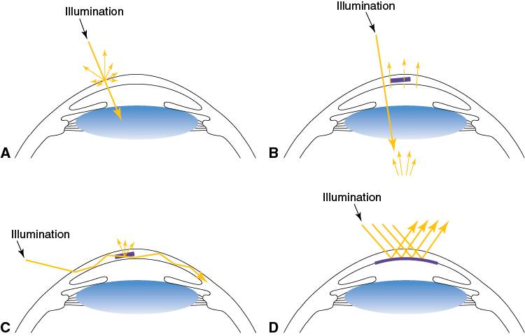
Figure 2-3 Slit section of normal cornea. 1, Tear film. 2, Epithelium. 3, Anterior stroma with a high density of keratocytes. 4, Posterior stroma with a lower density of keratocytes. 5, Descemet membrane and endothelium. (Reproduced with permission from Krachmer JH, Mannis MJ, Holland EJ, eds. Cornea. 2nd ed. Vol 1. Elsevier/Mosby; 2005:201. © CL Mártonyi, WK Kellogg Eye Center, University of Michigan.)
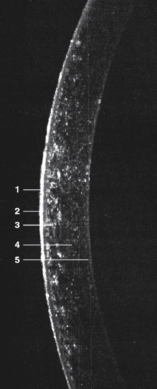
CHAPTER 2: Examination of the External Eye and Cornea ●
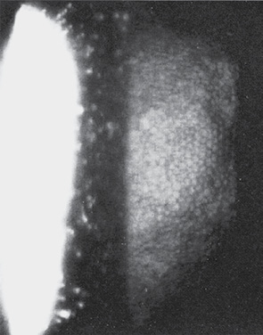
Figure 2-4 Corneal endothelium as visualized with specular reflection using a slit-lamp biomicroscope at 40× magnification. (Reproduced with permission from Krachmer JH, Mannis MJ, Holland EJ, eds. Cornea. 2nd ed. Vol 1. Elsevier/Mosby; 2005:208. © CL Mártonyi, WK Kellogg Eye Center, University of Michigan.)
Figure 2-5 Retroillumination reflex from the fundus, highlighting an Nd:YAG laser opening in the posterior capsule with Elschnig pearl formation. (Courtesy of Stephen E. Orlin, MD.)
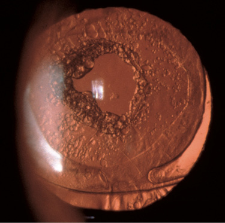
CHAPTER 2: Examination of the External Eye and Cornea ●
|
Table 2-1 Ocular Surface Stains |
||||||
|
Dye |
Fluorescein |
Rose Bengal |
Lissamine Green |
|||
|
Stains |
Precorneal tear film and disrupted cell junctions, erosions |
Devitalized cells, healthy cells |
Devitalized cells |
|||
|
Toxicity |
None |
Direct toxicity to epithelial cells, viruses, bacteria, and protozoa |
None |
|||
|
Data from Kim J. The use of vital dyes in corneal disease. Curr Opin Ophthalmol. 2000;11(4):241–247. |
||||||
Figure 2-6 Punctate staining patterns of the ocular surface. (Illustration by Joyce Zavarro.)
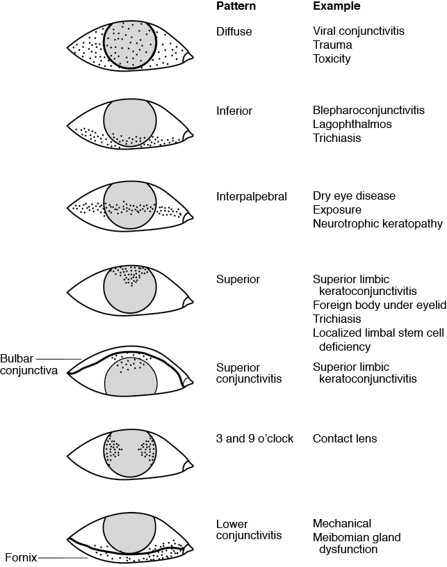
CHAPTER 2: Examination of the External Eye and Cornea ●
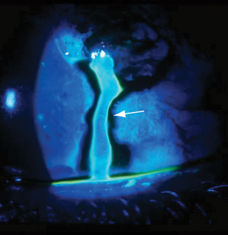
Figure 2-7 Leakage of fluid from the anterior chamber (arrow) following a corneal perforation, indicating a positive Seidel test result. (Courtesy of Stephen E. Orlin, MD.)
Figure 2-8 Slit-lamp photograph from a patient with conjunctival intraepithelial neoplasia showing staining with lissamine green dye. (Courtesy of Stephen E. Orlin, MD.)
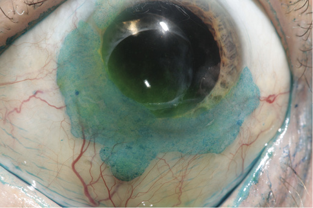
CHAPTER 2: Examination of the External Eye and Cornea ●
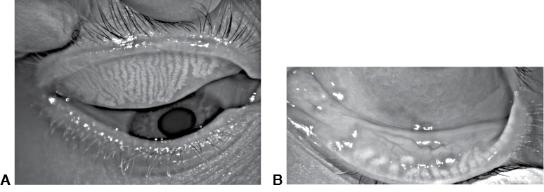
Figure 2-9 Meibography findings in normal and atrophic states. A, Upper-eyelid infrared meibograph depicting normal meibomian gland architecture. Note the long, straight glands with very little tortuosity. B, Lower eyelid meibograph showing severe gland truncation and atrophy. (Courtesy of Mina Massaro-Giordano, MD.)
Figure 2-10 Interferometry image shows the normal “rainbow” pattern of the lipid layer in the tear film. (Courtesy of Mina Massaro-Giordano, MD.)
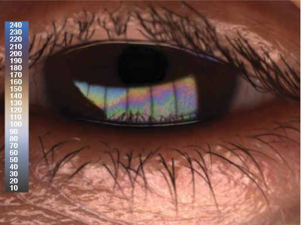
CHAPTER 2: Examination of the External Eye and Cornea ●
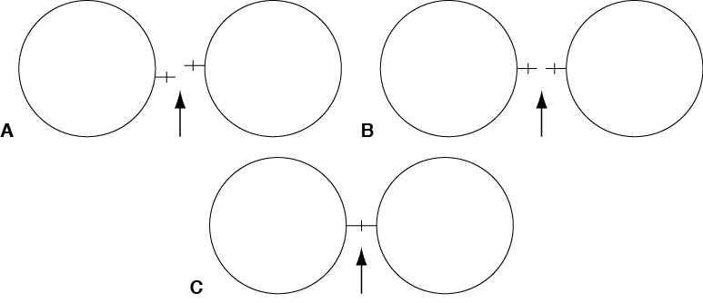
Figure 2-11 Keratometry. A, Misalignment of the keratometry mires (plus sign). B, Correct alignment of the mires prior to correcting power. C, Alignment of the keratometry mires and power in the 180° meridian.
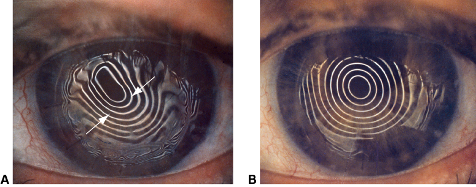
Figure 2-12 Keratoscopy findings before and after suture removal in a postkeratoplasty patient. A, With sutures in place, keratoscopic mires are closer together in the axis of steep curvature (arrows) and farther apart in the flat axis. B, Keratoscopic mires round out after sutures are cut. (Courtesy of Stephen E. Orlin, MD.)
CHAPTER 2: Examination of the External Eye and Cornea ●
Figure 2-13 Topography of a patient with regular “with-the-rule” astigmatism depicted by a symmetric bow-tie pattern. (Courtesy of Stephen E. Orlin, MD.)
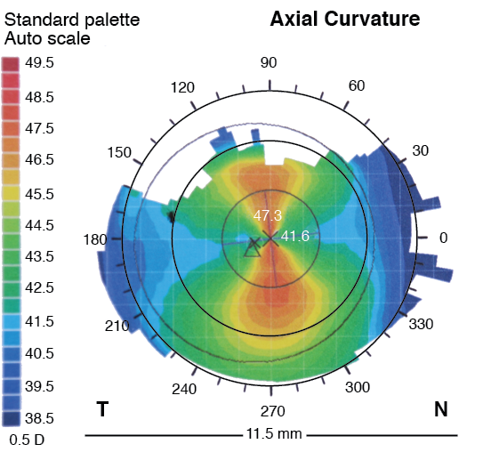
Figure 2-14 Corneal topography in a patient with keratoconus. The top image shows axial curvature; the bottom shows tangential curvature. Note that the steeper curve at the bottom is more closely aligned with the cone. (Courtesy of John E. Sutphin, MD.)
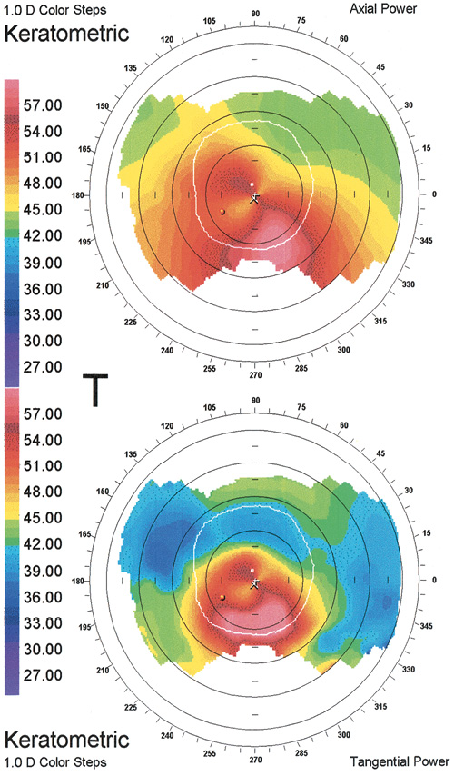
CHAPTER 2: Examination of the External Eye and Cornea ●
Figure 2-15 Power and pachymetry maps in a patient with keratoconus (also depicted in Fig 2-14). The top image shows mean curvature. The steepest part of the cornea in the top image is coincident with the thinnest part of the cornea in the bottom image. The pachymetry map below also shows decentration of the corneal thinning. In a normal cornea, the thinnest part is more centrally located. (Courtesy of John E. Sutphin, MD.)
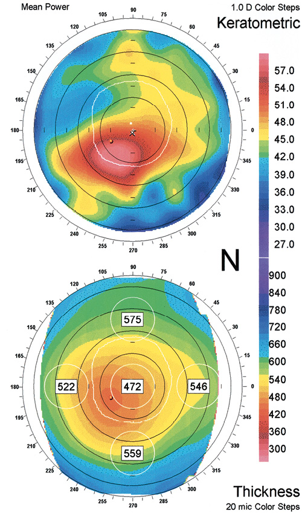
|
Table 2-2 Methods and Instruments for Corneal Topography and Tomography |
||
|
Method(s) |
Instruments |
|
|
Keratoscopy or Placido disk–based topography |
Atlas (Carl Zeiss Meditec) Topographic Modeling System (TMS-5; Tomey) OPD-Scan III (Nidek) |
|
|
Horizontal scanning-slit |
Orbscan IIz (Bausch + Lomb) |
|
|
Scheimpflug imaging |
Pentacam (Oculus Optikgeräte) TMS-5 (Tomey) Oculyzer (WaveLight Laser Technologie AG) |
|
|
Scheimpflug imaging with Placido disk–based topography |
Galilei (Ziemer Ophthalmic Systems AG) Sirius (Costruzione Strumenti Oftalmici) |
|
|
Rotating optical coherence tomography integrated into the Atlas topography system |
Visante (Carl Zeiss Meditec) SS-1000 Casia (Tomey) |
|
|
Arc scanning with very-high-frequency ultrasound |
Artemis II (ArcScan) |
|
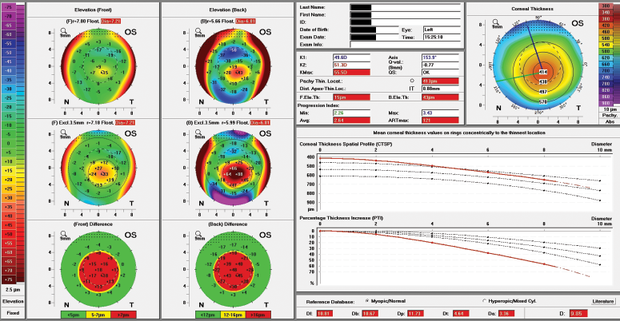
Figure 2-16 Ectasia risk can be assessed using Scheimpflug tomography. Anterior and posterior elevations are determined, modifying the best-fit sphere to accentuate elevation (left side). Pachymetric data are examined for progression of thinning from the thinnest cornea to the limbus (curvilinear graphs, middle right). (Courtesy of Robert W. Weisenthal, MD.)
CHAPTER 2: Examination of the External Eye and Cornea ●
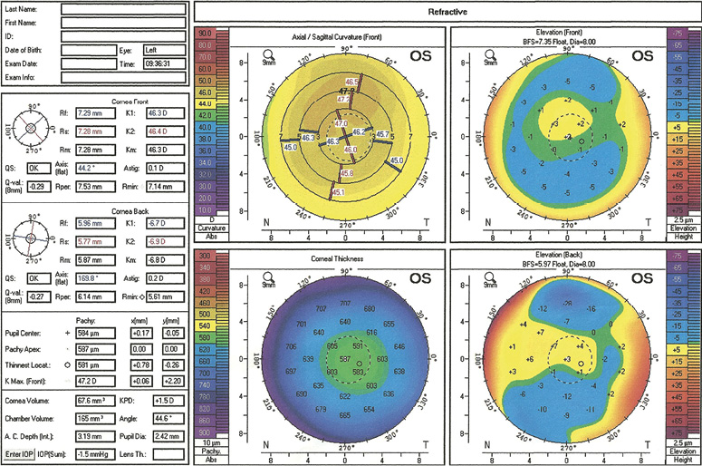
Figure 2-17 Scheimpflug imaging of a normal cornea. Note the axial curvature, pachymetry, and anterior elevation and posterior elevation maps. (Courtesy of Stephen E. Orlin, MD.)
CHAPTER 2: Examination of the External Eye and Cornea ●
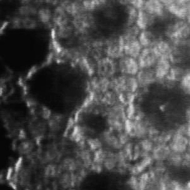
Figure 2-18 Specular microscopy showing Fuchs endothelial corneal dystrophy with guttae, dark shadows. (Courtesy of John E. Sutphin, MD.)
CHAPTER 2: Examination of the External Eye and Cornea ●
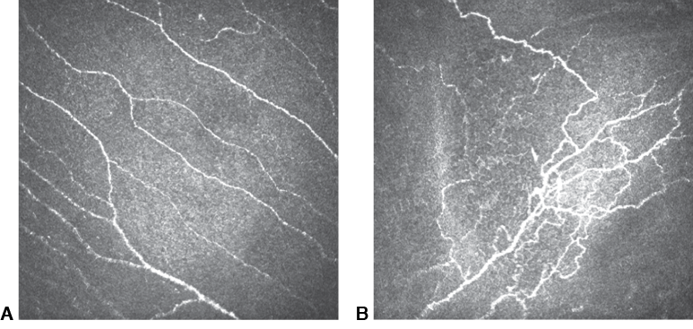
Figure 2-19 Confocal microscopy of corneal nerves. A, Normal nerve architecture. B, Tortuous branching patterns. (Courtesy of Mina Massaro-Giordano, MD.)
Figure 2-20 Anterior segment optical coherence tomography (AS-OCT) image of a phakic eye. The central anterior chamber depth is 2.73 mm; note the moderate narrowing of the anterior-chamber angle. (Reproduced from Goins KM, Wagoner MD. Imaging the anterior segment. Focal Points: Clinical Modules for Ophthalmologists. American Academy of Ophthalmology; 2009, module 11.)
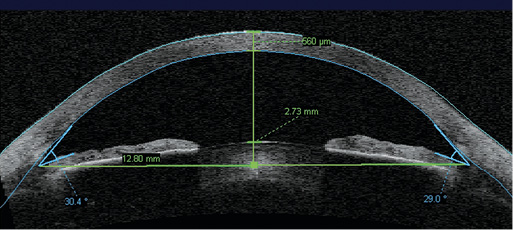
CHAPTER 2: Examination of the External Eye and Cornea ●
Figure 2-21 Ultrasound biomicroscopic visualization of the entire anterior segment, including structures behind the iris pigment epithelium, for precise sulcus-to-sulcus measurement prior to implantation of a phakic refractive intraocular lens. (Reproduced from Goins KM, Wagoner MD. Imaging the anterior segment. Focal Points: Clinical Modules for Ophthalmologists. American Academy of Ophthalmology; 2009, module 11.)
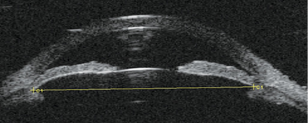